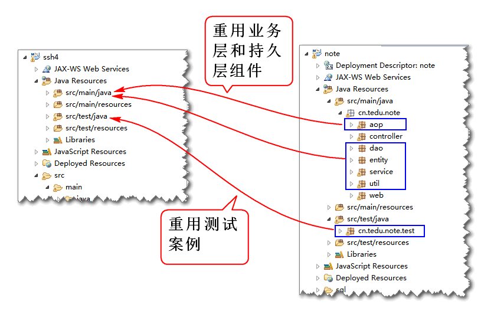
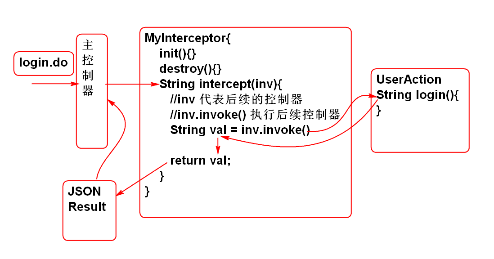

重构云笔记项目, 将Spring MVC 替换为 Struts2, 将MyBatis替换为Hibernate.
创建项目, 导入SSH包:
<dependency>
<groupId>org.apache.struts</groupId>
<artifactId>struts2-core</artifactId>
<version>2.3.8</version>
</dependency>
<dependency>
<groupId>org.apache.struts</groupId>
<artifactId>struts2-spring-plugin</artifactId>
<version>2.3.8</version>
</dependency>
<dependency>
<groupId>jstl</groupId>
<artifactId>jstl</artifactId>
<version>1.2</version>
</dependency>
<dependency>
<groupId>org.hibernate</groupId>
<artifactId>hibernate-core</artifactId>
<version>3.6.9.Final</version>
</dependency>
<dependency>
<groupId>mysql</groupId>
<artifactId>mysql-connector-java</artifactId>
<version>5.1.6</version>
</dependency>
<dependency>
<groupId>junit</groupId>
<artifactId>junit</artifactId>
<version>4.12</version>
</dependency>
<dependency>
<groupId>org.springframework</groupId>
<artifactId>spring-orm</artifactId>
<version>3.0.5.RELEASE</version>
</dependency>
<dependency>
<groupId>commons-dbcp</groupId>
<artifactId>commons-dbcp</artifactId>
<version>1.4</version>
</dependency>
<dependency>
<groupId>org.apache.struts</groupId>
<artifactId>struts2-json-plugin</artifactId>
<version>2.3.8</version>
</dependency>
<dependency>
<groupId>aspectj</groupId>
<artifactId>aspectjweaver</artifactId>
<version>1.5.3</version>
</dependency>
<dependency>
<groupId>commons-codec</groupId>
<artifactId>commons-codec</artifactId>
<version>1.10</version>
</dependency>
还需要导入目标运行环境为: Tomcat Runtime
添加配置 Struts2 和 Spring 的配置 web.xml
<filter>
<display-name>StrutsPrepareAndExecuteFilter</display-name>
<filter-name>StrutsPrepareAndExecuteFilter</filter-name>
<filter-class>org.apache.struts2.dispatcher.ng.filter.StrutsPrepareAndExecuteFilter</filter-class>
</filter>
<filter-mapping>
<filter-name>StrutsPrepareAndExecuteFilter</filter-name>
<url-pattern>/*</url-pattern>
</filter-mapping>
<listener>
<listener-class>org.springframework.web.context.ContextLoaderListener</listener-class>
</listener>
<context-param>
<param-name>contextConfigLocation</param-name>
<param-value>classpath:conf/spring-*.xml</param-value>
</context-param>
添加Struts2 配置文件 struts.xml
<?xml version="1.0" encoding="UTF-8"?>
<!DOCTYPE struts PUBLIC
"-//Apache Software Foundation//DTD Struts Configuration 2.3//EN"
"http://struts.apache.org/dtds/struts-2.3.dtd">
<struts>
</struts>
添加Spring配置文件:
spring-aop.xml
<?xml version="1.0" encoding="UTF-8"?>
<beans xmlns="http://www.springframework.org/schema/beans"
xmlns:xsi="http://www.w3.org/2001/XMLSchema-instance"
xmlns:context="http://www.springframework.org/schema/context"
xmlns:jdbc="http://www.springframework.org/schema/jdbc"
xmlns:jee="http://www.springframework.org/schema/jee"
xmlns:tx="http://www.springframework.org/schema/tx"
xmlns:aop="http://www.springframework.org/schema/aop"
xmlns:mvc="http://www.springframework.org/schema/mvc"
xmlns:util="http://www.springframework.org/schema/util"
xmlns:jpa="http://www.springframework.org/schema/data/jpa"
xsi:schemaLocation="
http://www.springframework.org/schema/beans http://www.springframework.org/schema/beans/spring-beans-3.0.xsd
http://www.springframework.org/schema/context http://www.springframework.org/schema/context/spring-context-3.0.xsd
http://www.springframework.org/schema/jdbc http://www.springframework.org/schema/jdbc/spring-jdbc-3.0.xsd
http://www.springframework.org/schema/jee http://www.springframework.org/schema/jee/spring-jee-3.0.xsd
http://www.springframework.org/schema/tx http://www.springframework.org/schema/tx/spring-tx-3.0.xsd
http://www.springframework.org/schema/data/jpa http://www.springframework.org/schema/data/jpa/spring-jpa-1.3.xsd
http://www.springframework.org/schema/aop http://www.springframework.org/schema/aop/spring-aop-3.0.xsd
http://www.springframework.org/schema/mvc http://www.springframework.org/schema/mvc/spring-mvc-3.0.xsd
http://www.springframework.org/schema/util http://www.springframework.org/schema/util/spring-util-3.0.xsd">
<!-- 配置组件扫描 -->
<context:component-scan
base-package="cn.tedu.note.aop"/>
<!-- 使 @Aspect 注解生效 -->
<aop:aspectj-autoproxy/>
</beans>
spring-service.xml
<?xml version="1.0" encoding="UTF-8"?>
<beans xmlns="http://www.springframework.org/schema/beans"
xmlns:xsi="http://www.w3.org/2001/XMLSchema-instance"
xmlns:context="http://www.springframework.org/schema/context"
xmlns:jdbc="http://www.springframework.org/schema/jdbc"
xmlns:jee="http://www.springframework.org/schema/jee"
xmlns:tx="http://www.springframework.org/schema/tx"
xmlns:aop="http://www.springframework.org/schema/aop"
xmlns:mvc="http://www.springframework.org/schema/mvc"
xmlns:util="http://www.springframework.org/schema/util"
xmlns:jpa="http://www.springframework.org/schema/data/jpa"
xsi:schemaLocation="
http://www.springframework.org/schema/beans http://www.springframework.org/schema/beans/spring-beans-3.0.xsd
http://www.springframework.org/schema/context http://www.springframework.org/schema/context/spring-context-3.0.xsd
http://www.springframework.org/schema/jdbc http://www.springframework.org/schema/jdbc/spring-jdbc-3.0.xsd
http://www.springframework.org/schema/jee http://www.springframework.org/schema/jee/spring-jee-3.0.xsd
http://www.springframework.org/schema/tx http://www.springframework.org/schema/tx/spring-tx-3.0.xsd
http://www.springframework.org/schema/data/jpa http://www.springframework.org/schema/data/jpa/spring-jpa-1.3.xsd
http://www.springframework.org/schema/aop http://www.springframework.org/schema/aop/spring-aop-3.0.xsd
http://www.springframework.org/schema/mvc http://www.springframework.org/schema/mvc/spring-mvc-3.0.xsd
http://www.springframework.org/schema/util http://www.springframework.org/schema/util/spring-util-3.0.xsd">
<context:component-scan
base-package="cn.tedu.note.service"/>
</beans>
添加Spring Hibernate 配置文件:
数据库连接参数文件: conf/jdbc.properties
driver=com.mysql.jdbc.Driver
url=jdbc:mysql://localhost:3306/cloud_note
user=root
password=root
maxActive=20
salt=\u4ECA\u5929\u4F60\u5403\u4E86\u5417?
pageSize=4
spring-hbm.xml
<?xml version="1.0" encoding="UTF-8"?>
<beans xmlns="http://www.springframework.org/schema/beans"
xmlns:xsi="http://www.w3.org/2001/XMLSchema-instance"
xmlns:context="http://www.springframework.org/schema/context"
xmlns:jdbc="http://www.springframework.org/schema/jdbc"
xmlns:jee="http://www.springframework.org/schema/jee"
xmlns:tx="http://www.springframework.org/schema/tx"
xmlns:aop="http://www.springframework.org/schema/aop"
xmlns:mvc="http://www.springframework.org/schema/mvc"
xmlns:util="http://www.springframework.org/schema/util"
xmlns:jpa="http://www.springframework.org/schema/data/jpa"
xsi:schemaLocation="
http://www.springframework.org/schema/beans http://www.springframework.org/schema/beans/spring-beans-3.0.xsd
http://www.springframework.org/schema/context http://www.springframework.org/schema/context/spring-context-3.0.xsd
http://www.springframework.org/schema/jdbc http://www.springframework.org/schema/jdbc/spring-jdbc-3.0.xsd
http://www.springframework.org/schema/jee http://www.springframework.org/schema/jee/spring-jee-3.0.xsd
http://www.springframework.org/schema/tx http://www.springframework.org/schema/tx/spring-tx-3.0.xsd
http://www.springframework.org/schema/data/jpa http://www.springframework.org/schema/data/jpa/spring-jpa-1.3.xsd
http://www.springframework.org/schema/aop http://www.springframework.org/schema/aop/spring-aop-3.0.xsd
http://www.springframework.org/schema/mvc http://www.springframework.org/schema/mvc/spring-mvc-3.0.xsd
http://www.springframework.org/schema/util http://www.springframework.org/schema/util/spring-util-3.0.xsd">
<!-- 配置 spring-mybatis.xml -->
<!-- 读取配置文件 -->
<util:properties id="jdbc"
location="classpath:conf/jdbc.properties"/>
<!-- 配置数据库连接池 -->
<bean id="dataSource"
class="org.apache.commons.dbcp.BasicDataSource"
destroy-method="close">
<property name="driverClassName"
value="#{jdbc.driver}"/>
<property name="url"
value="#{jdbc.url}"/>
<property name="username"
value="#{jdbc.user}"/>
<property name="password"
value="#{jdbc.password}"/>
<property name="maxActive"
value="#{jdbc.maxActive}"></property>
</bean>
<bean id="sessionFactory"
class="org.springframework.orm.hibernate3.LocalSessionFactoryBean">
<property name="dataSource"
ref="dataSource"/>
<property name="hibernateProperties">
<props>
<prop key="hibernate.dialect">
org.hibernate.dialect.MySQLDialect
</prop>
<prop key="hibernate.show_sql">true</prop>
<prop key="hibernate.format_sql">true</prop>
</props>
</property>
<property name="mappingLocations">
<list>
<!--
<value>classpath:hbm/User.hbm.xml</value>
-->
</list>
</property>
</bean>
<bean id="hibernateTemplate"
class="org.springframework.orm.hibernate3.HibernateTemplate">
<property name="sessionFactory"
ref="sessionFactory"/>
</bean>
<!-- spring-mybatis.xml -->
<bean id="txManager"
class="org.springframework.orm.hibernate3.HibernateTransactionManager">
<property name="sessionFactory"
ref="sessionFactory"/>
</bean>
<!-- 设置 注解驱动的事务管理 -->
<tx:annotation-driven
transaction-manager="txManager"/>
</beans>
部署测试
...

测试组件的作用: 如果能够通过测试组件的回归测试, 则说明持久层和业务层重构成功!
重构 NoteDao, NotebookDao, 删除MyBatis注解 @Param
public interface NoteDao {
List<Map<String,Object>>
findNotesByNotebookId(
String notebookId);
Note findNoteById(String noteId);
int updateNote(Note note);
int addNote(Note note);
List<Map<String, Object>>
findDeleteNotesByUserId(String userId);
int deleteNoteById(String noteId);
int deleteNotes(
String... ids);
List<Map<String, Object>> findNotes(
String userId,
String notebookId,
String statusId);
}
public interface NotebookDao {
List<Map<String, Object>>
findNotebooksByUserId(
String userId);
int countNotebookById(String notebookId);
List<Map<String, Object>>
findNotebooksByPage(
String userId,
int start,
int pageSize,
String table);
}
添加映射文件 hbm/User.hbm.xml:
<?xml version="1.0" encoding="utf-8"?>
<!DOCTYPE hibernate-mapping PUBLIC
"-//Hibernate/Hibernate Mapping DTD 3.0//EN"
"http://www.hibernate.org/dtd/hibernate-mapping-3.0.dtd">
<hibernate-mapping>
<class name="cn.tedu.note.entity.User"
table="cn_user">
<id name="id" column="cn_user_id"></id>
<property name="name" column="cn_user_name"
type="string"/>
<property name="password" column="cn_user_password" />
<property name="token" column="cn_user_token" />
<property name="nick" column="cn_user_nick" />
</class>
</hibernate-mapping>
将实体User映射到表 cn_user
实现 UserDao
@Repository("userDao")
public class UserDaoImpl implements UserDao {
@Resource
private HibernateTemplate hibernateTemplate;
public User findUserByName(String name) {
//HQL Hibernate Query Language
// sql:
// select * from cn_note
// where cn_user_name = #{name}
// HQL:
// from User
// where name = ?
String hql =
"from User where name = ?";
List<User> list=
hibernateTemplate.find(hql, name);
return list.isEmpty()?null:list.get(0);
}
public int addUser(User user) {
Serializable id=
hibernateTemplate.save(user);
return id==null ? 0 : 1;
}
public User findUserById(String userId) {
return hibernateTemplate.get(User.class, userId);
}
}
重构 spring-hbm.xml
配置hbm/User.hbm.xml
<property name="mappingLocations">
<list>
<value>classpath:hbm/User.hbm.xml</value>
</list>
</property>
打开组件扫描
<context:component-scan base-package="cn.tedu.note.dao"/>
重构 测试案例 基类 BaseTest
@Before
public void initCtx() {
ctx = new ClassPathXmlApplicationContext(
"conf/spring-hbm.xml",
"conf/spring-service.xml");
}
执行测试案例 UserDaoTest, 进行回归性测试:
...
由于Spring容器初始化期间会扫描创建全部的Bean, 并且注入全部属性, 如果不将dao接口全部实现就会造成Spring容器初始化异常, 故将dao接口全部空实现, 在具体方法的功能实现在日后逐一添加.
实现NoteDao
@Repository("noteDao")
public class NoteDaoImpl implements NoteDao {
public List<Map<String, Object>> findNotesByNotebookId(String notebookId) {
// TODO Auto-generated method stub
return null;
}
public Note findNoteById(String noteId) {
// TODO Auto-generated method stub
return null;
}
public int updateNote(Note note) {
// TODO Auto-generated method stub
return 0;
}
public int addNote(Note note) {
// TODO Auto-generated method stub
return 0;
}
public List<Map<String, Object>> findDeleteNotesByUserId(String userId) {
// TODO Auto-generated method stub
return null;
}
public int deleteNoteById(String noteId) {
// TODO Auto-generated method stub
return 0;
}
public int deleteNotes(String... ids) {
// TODO Auto-generated method stub
return 0;
}
public List<Map<String, Object>> findNotes(String userId, String notebookId, String statusId) {
// TODO Auto-generated method stub
return null;
}
}
实现NotebookDao
@Repository("notebookDao")
public class NotebookDaoImpl implements NotebookDao {
public List<Map<String, Object>> findNotebooksByUserId(String userId) {
// TODO Auto-generated method stub
return null;
}
public int countNotebookById(String notebookId) {
// TODO Auto-generated method stub
return 0;
}
public List<Map<String, Object>> findNotebooksByPage(String userId, int start, int pageSize, String table) {
// TODO Auto-generated method stub
return null;
}
}
实现StarsDao
@Repository("starsDao")
public class StarsDaoImpl implements StarsDao {
public Stars findStarsByUserId(String userId) {
// TODO Auto-generated method stub
return null;
}
public int insertStars(Stars stars) {
// TODO Auto-generated method stub
return 0;
}
public int updateStars(Stars stars) {
// TODO Auto-generated method stub
return 0;
}
}
测试 UserService 的 Login 方法
...
创建控制器的抽象父类, 封装控制器的公共属性和方法:
public abstract class AbstractAction
extends ActionSupport
implements SessionAware,
RequestAware,
ApplicationAware{
protected static final String JSON="json";
protected Map<String, Object> request;
protected Map<String, Object> session;
protected Map<String, Object> application;
//Json返回值
protected JsonResult jsonResult;
public JsonResult getJsonResult() {
return jsonResult;
}
public void setJsonResult(JsonResult jsonResult) {
this.jsonResult = jsonResult;
}
public void setSession(
Map<String, Object> session) {
this.session=session;
}
public void setRequest(
Map<String, Object> request) {
this.request=request;
}
public void setApplication(
Map<String, Object> application) {
this.application=application;
}
}
声明常量 JSON 用于配合JSON返回结果
创建UserAction
@Controller
@Scope("prototype")
public class UserAction extends AbstractAction{
@Resource
private UserService userService;
private String name;
private String password;
public String getName() {
return name;
}
public void setName(String name) {
this.name = name;
}
public String getPassword() {
return password;
}
public void setPassword(String password) {
this.password = password;
}
public String login(){
User user = userService.login(name, password);
session.put("loginUser", user);
jsonResult=new JsonResult(user);
return JSON;
}
}
其中 name, password 来时用户界面提交的参数, jsonResult 是JSON返回值.
添加配置文件 spring-struts.xml 初始化 Struts 控制器Bean
<?xml version="1.0" encoding="UTF-8"?>
<beans xmlns="http://www.springframework.org/schema/beans"
xmlns:xsi="http://www.w3.org/2001/XMLSchema-instance"
xmlns:context="http://www.springframework.org/schema/context"
xmlns:jdbc="http://www.springframework.org/schema/jdbc"
xmlns:jee="http://www.springframework.org/schema/jee"
xmlns:tx="http://www.springframework.org/schema/tx"
xmlns:aop="http://www.springframework.org/schema/aop"
xmlns:mvc="http://www.springframework.org/schema/mvc"
xmlns:util="http://www.springframework.org/schema/util"
xmlns:jpa="http://www.springframework.org/schema/data/jpa"
xsi:schemaLocation="
http://www.springframework.org/schema/beans http://www.springframework.org/schema/beans/spring-beans-3.0.xsd
http://www.springframework.org/schema/context http://www.springframework.org/schema/context/spring-context-3.0.xsd
http://www.springframework.org/schema/jdbc http://www.springframework.org/schema/jdbc/spring-jdbc-3.0.xsd
http://www.springframework.org/schema/jee http://www.springframework.org/schema/jee/spring-jee-3.0.xsd
http://www.springframework.org/schema/tx http://www.springframework.org/schema/tx/spring-tx-3.0.xsd
http://www.springframework.org/schema/data/jpa http://www.springframework.org/schema/data/jpa/spring-jpa-1.3.xsd
http://www.springframework.org/schema/aop http://www.springframework.org/schema/aop/spring-aop-3.0.xsd
http://www.springframework.org/schema/mvc http://www.springframework.org/schema/mvc/spring-mvc-3.0.xsd
http://www.springframework.org/schema/util http://www.springframework.org/schema/util/spring-util-3.0.xsd">
<context:component-scan
base-package="cn.tedu.note.action"/>
</beans>
在 struts.xml 中配置控制器
<!-- 修改请求扩展名 action改为do -->
<constant name="struts.action.extension"
value="do"></constant>
<package name="user" namespace="/user"
extends="json-default">
<global-results>
<result name="json" type="json">
<param name="root">jsonResult</param>
</result>
</global-results>
<action name="login" class="userAction"
method="login"/>
</package>
测试:
http://localhost:8080/ssh4/user/login.do?name=demo&password=123456
在用户界面中整合测试登录功能.
重构控制器 UserAction, 添加控制器方法:
private String nick;
private String confirm;
public String getNick() {
return nick;
}
public void setNick(String nick) {
this.nick = nick;
}
public String getConfirm() {
return confirm;
}
public void setConfirm(String confirm) {
this.confirm = confirm;
}
public String regist(){
User user = userService.regist(
name, nick, password, confirm);
jsonResult = new JsonResult(user);
return JSON;
}
其中扩展了两个表单参数 nick 和 conform
配置 struts.xml:
<action name="regist" class="userAction"
method="regist"/>
测试
...
Struts 提供了默认的异常拦截功能, 但是不适合将异常转换为JSON, 可以利用拦截器处理Struts2 异常, 转换为JSON消息.
Struts2 拦截器工作原理:

编写拦截器类:
@Component
public class MyInterceptor
implements Interceptor {
public void destroy() {}
public void init() {}
public String intercept(
ActionInvocation invocation)
throws Exception {
System.out.println("控制器之前");
String val = invocation.invoke();
System.out.println("控制器之后");
return val;
}
}
设置组件扫描 spring-struts.xml
<context:component-scan
base-package="cn.tedu.note.web"/>
配置拦截器:
<interceptors>
<interceptor name="demo"
class="myInterceptor"/>
<interceptor-stack name="demoStack">
<interceptor-ref name="defaultStack"/>
<interceptor-ref name="demo"></interceptor-ref>
</interceptor-stack>
</interceptors>
<action name="login" class="userAction"
method="login">
<interceptor-ref name="demoStack"></interceptor-ref>
</action>
必须将用户拦截器demo和系统拦截器栈defaultStack组合为一个新的拦截器栈 demoStack, 这样才能保留系统提供的功能!!

测试: 在登录时候输出拦截器的内容
异常原因分析:

原理:

重构 AbstractAction 添加异常处理方法
//AbstractAction 中约定控制器处理异的方法
public String handleException(Exception e) {
e.printStackTrace();
jsonResult = new JsonResult(e);
return JSON;
}
这样全部的控制器都有异常处理方法了.
添加拦截器拦截异常:
@Component
public class ExceptionInterceptor implements Interceptor {
public void destroy() {
}
public void init() {
}
public String intercept(
ActionInvocation invocation)
throws Exception {
//得到目标控制器
AbstractAction action =
(AbstractAction)invocation.getAction();
//调用目标控制器的方法
String val = null;
try {
val = invocation.invoke();
} catch (Exception e) {
val = action.handleException(e);
}
if(val == null){
throw new NullPointerException();
}
return val;
}
}
配置异常拦截器 struts.xml
<interceptors>
<interceptor name="execInte"
class="exceptionInterceptor"/>
<interceptor-stack name="noteStack">
<interceptor-ref name="defaultStack"/>
<interceptor-ref name="execInte"></interceptor-ref>
</interceptor-stack>
</interceptors>
<default-interceptor-ref name="noteStack"/>
配置 default-interceptor-ref 元素以后, 所有控制器就都被异常处理拦截器拦截了!
测试...